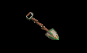
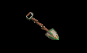
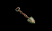

NORTHLAND GRAVES

NORTHLAND GRAVES[GRAVEYARDS]

NORTHLAND GRAVES| SAR-SARGOTH GRAVEYARD | ||
| Gorath of the Greenheart Clan | His death was slow and torturous. | |
| Gorath of the Greenheart Clan | A traitor to his people. | |
| Gorath of the Greenheart Clan | He died on his knees. | |
| Gorath of the Greenheart Clan | Betrayed his people. Choked to death on his own blood. | |
| Gorath of the Greenheart Clan | Delekhan ran him through. | |
| Gorath of the Greenheart Clan | His human blood made him weak. | |
| Gorath of the Greenheart Clan | Lay with beasts. | |
| Owyn Belleforte | His luck finally ran out. | |
| Owyn Belleforte | Called himself a magician. | |
| Owyn Belleforte | Merely a pawn in a grand game. | |
| CAERN GRAVEYARD | ||
| Eldoban | Beldogal Clan | |
| Weldaam | Beldogal Clan | |
| Nundekamp | Beldogal Clan | |
| Indabul Laz | Golbandek Clan | |
| Mobalgalf | Golbandek Clan | |
| Slubnovak | Yulvend Clan | |
| Culdenvalk | Yulvend Clan | |
| Plubneband | Pobel Clan | |
| Vell Hulbandek | Pobel Clan | |
| Olvundekai | Pobel Clan | |
| ARMENGAR GRAVEYARD | ||
| Bronwynn Alpress | My first love. [Guess who raised this stone!] | |
| Delynne Malpress | Died in the battle of Armengar. | |
| Braddock Alwynne | Died for the Protector. | |
| Larston Alwynne | The death of the city consumed him. | |
| Quentin Alwynne | A good soldier. | |
| Walton Dannis | Fought valiantly at the battle of Armengar. | |
| Trell Dannis | Killed by a troll at the battle of Armengar. | |
| Keshia Marne | Mother. Lover. Soldier. | |
| Indall Marne | Murmandamus killed him. | |
| Peller Caldwynne | Died fighting for the Protector. | |
| Oliver Caldwynne | His victories surpassed his years. | |